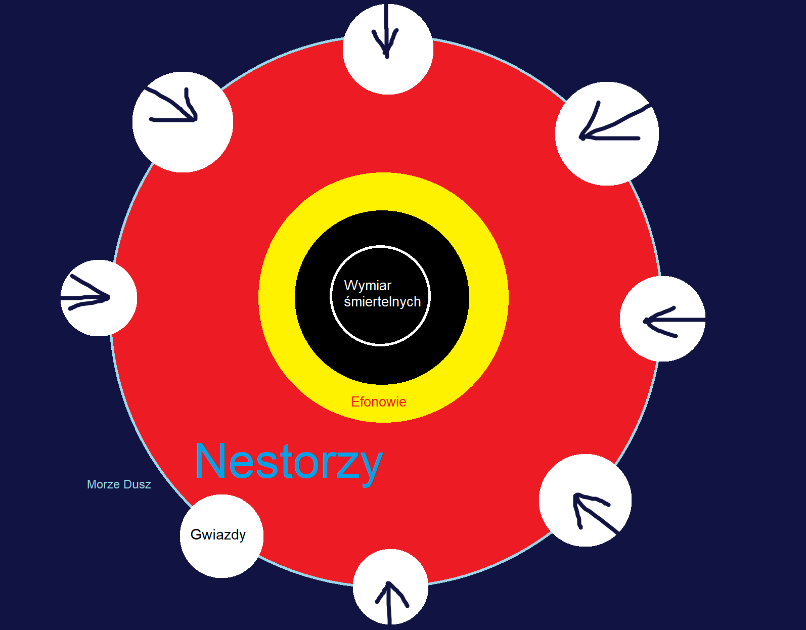

Numena
Numena to odpowiednik many, prany, qi czy każdej innej energii życiowo-magicznej z systemów świata prawdziwego i systemów światów prawdziwych inaczej. Jest abstrakcyjną, wykraczającą poza zrozumienie śmiertelnych siłą, która pozwala kształtować czas i przestrzeń tym, którzy potrafią ją oswoić. Pochodzi ona do świata śmiertelnych poprzez gwiazdy takie, które są metaforycznymi oknami do innego wymiaru egzystencji.
Istnieją różne wymiary egzystencji, a ten z którego oryginalnie pochodzi Numena (która przenika do wszystkich wymiarów) to Morze Dusz, które nazywane jest również Planem Astralnym ze względu na to, że to właśnie poprzez gwiazdy przechodzi do świata śmiertelnych Numena. Istnieją również inne wymiary, należą one jednak do konkretnych
Istot Astralnych.
